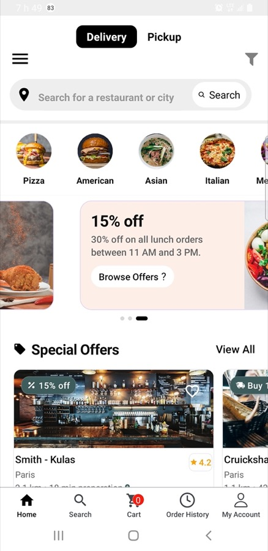

Customer app
The mobile storefront of your food marketplace — from “I’m hungry” to a tracked delivery, with wallet, memberships, and smart suggestions that make the next order feel inevitable.
This overview is for buyers and teams who want to feel the product before they open a terminal: what customers do, what the screens look like, and how this app sits next to driver, restaurant, admin, and your API.
A storefront people actually enjoy
The customer app is where your brand meets the street. People browse nearby restaurants, open rich menus, fill a cart, pay, and follow the order until it arrives — without needing a tutorial. Everything important lives on your server: accounts, menus, orders, and payments talk to the shared REST API you host.
It is one piece of a five-product suite (customer, driver, restaurant, admin, and MongoDB-backed API). Point the app at your API base URL and the same data powers every role — so a status change in the kitchen can show up for the customer and the driver without juggling three databases.

Home — discover places nearby, offers, and categories
Your API, your data
Auth and business data go through the suite’s REST API and MongoDB. You run them (laptop, VPS, or cloud), set the app’s API base URL, and grow the backend like any Node.js service.
More than a menu browser
Everyday ordering is the core: sign in, find food, customize items, checkout, track. Around that journey sit the features operators need to compete — addresses and languages (EN/FR/ES/AR), wallet and cards, membership plans, sponsored restaurant placement on the feed, smart recommendations / ETA / surge cues, and live tracking.
Dive deeper in Monetization, AI intelligence, Market adaptability, and Logistics & POD.
What customers come to do
Place food orders from a phone — from discovery to confirmation — then stay informed until the bag arrives.
Search and filters shrink a crowded city to “what I want tonight.” Menu detail and quantities stay obvious. After checkout, status updates replace anxious guessing. That calm loop is what turns a first install into a habit.
Supported Platforms
- Android
- iOS
A single shared codebase powers both platforms, which helps maintain consistent user experience and visual quality across devices.
This approach also lowers maintenance cost and speeds up feature delivery, updates, and bug fixes for product teams.
Tech Stack
The customer app uses React Native and Expo for Android and iOS. State and navigation patterns are built for production ordering flows against your HTTP API.
Persistence and business rules live on your API and database; the mobile app consumes your HTTP endpoints.
Run the backend from the repository that ships with the suite (for example my-backend),
then connect the app using config/index.js as described in Getting Started.
Project Structure
Well-organized React Native codebase following standard conventions. Key directories are highlighted below.
-
📄 App.js (entry point)
-
📁 api/ (REST client & 15+ endpoints)
- 📄 index.js
- 📄 client.js
- 📄 auth.js
- 📄 restaurants.js
- 📄 orders.js
-
📁 components/ (41+ reusable UI components)
- 📁 home/
- 📁 restaurantDetail/
- 📄 Cart.js
- 📄 FilterModal.js
-
📁 screens/ (34+ screens)
- 📄 Home.js
- 📄 RestaurantDetail.js
- 📄 CartScreen.js
- 📄 OrderTracking.js
-
📁 navigation/
-
📁 contexts/
-
📁 global/ (theme, constants)
-
📁 lang/ (i18n EN/FR/ES/AR)
-
📁 utils/ (cache, helpers)
-
📁 config/ (API, assets)
-
📁 docs/ (this documentation)
Current Version
1.0.0
The current public baseline is version 1.0.0, ready to be used as a solid starting point for deployment, demos, and project customization.
This version is ideal for teams that want to launch efficiently while keeping room for future feature expansion.
What you need to run the app
Node.js, Expo, simulators, API URLs, and Maps keys are documented once for the whole suite on Environment setup.
For this customer app specifically: clone customer-app, install dependencies, set API_BASE_URL in config/index.js,
start the API from my-backend (see Backend — Getting Started),
then follow Getting Started.